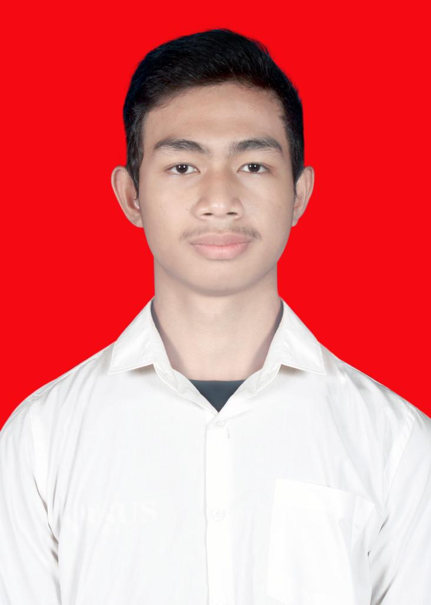

Curiculum Vitae

Name : Rama Rizki Hadistia Mukti
Address : Cicalengka
No Phone : 082137672755
Email : rama01rizki23@gmail.com
DESCRIPTION
I am an enthusiastic and dedicated individual with a strong academic background in social sciences. Throughout my educational journey, I have developed a keen understanding of various social and economic concepts, which has enhanced
my analytical and critical thinking abilities. Although I am at the beginning of my professional career and do not yet have formal work experience, I bring a fresh perspective and a willingness to learn and grow within a professional
setting. My passion for technology, particularly in web development, has led me to self-study and gain proficiency in using Visual Studio Code for creating websites. This has equipped me with basic knowledge of HTML, CSS, and
JavaScript, and an understanding of the fundamentals of website design and development. My self-motivation in this area demonstrates my capability to learn new skills independently and apply them effectively. I am a strong
communicator with the ability to articulate ideas clearly and work collaboratively in team settings. I am seeking an opportunity where I can leverage my academic knowledge and my budding technical skills, ideally in a role that
bridges technology with social sciences. I am excited about the prospect of contributing my unique blend of skills and perspectives to a forward-thinking organization.
EDUCATION
- Tenjolaya 1 State Elementary School
- Cicalengka 1 Public Middle School
- Bina Muda Cicalengka High School
SEMINAR/WORKSHOP
- Entrepreneurship Skills Program
- Speak Together "In Search of the Ideal Leader"
TRAINING
- Screen printing
PROGRAMMING LANGUAGE
HTML
CSS